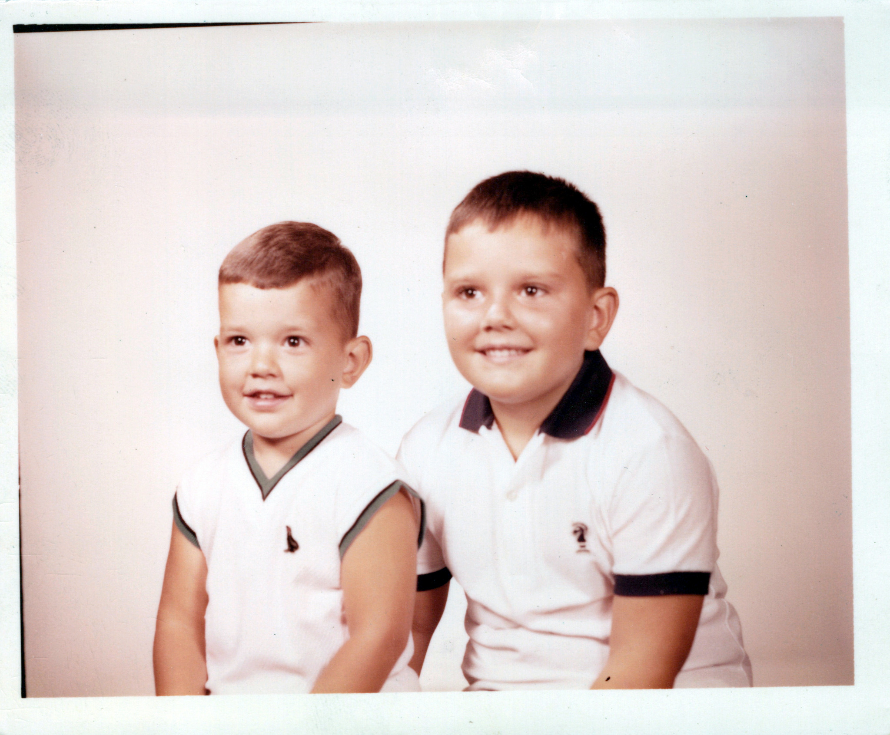

Bell Family Member
James Stewart “Spooky” Bell III
Family photographs, memories & documents
A dedicated archive page for Spooky, bringing together the photographs and records in the Bell Family Archive that identify him.
36 currently identified archive items
Personal Archive
Spooky Bell — Photos & Documents
Items currently identified with Spooky Bell. Additional records can be added as the family archive grows.
1956
November 1956
Spooky (left) with Dickey (right) as a baby.
1111_0007.jpg
1957

Circa 1957
Dickey, and Spooky.
1957_0015.jpg

Circa 1957
Dickey, and Spooky.
1957_0019.jpg

Circa 1957
Dickey, and Spooky.
1957_0021.jpg

Circa 1957
Dickey, and Spooky.
1957_0026.jpg

Circa 1957
Dickey, and Spooky.
1957_0027.jpg

Circa 1957
Dickey, and Spooky.
1957_0029.jpg

Circa summer 1957
Spooky (older boy) holding Dickey (younger boy).
1111_0008.jpg

December 1957
Spooky (left) and Dickey (right).
1112_0014.jpg

December 1957
Dickey and Spooky.
1950s_0001.jpg

December 1957
Dickey, and Spooky.
1957_0030.jpg
1958
.jpg)
April 5, 1958
Dickey, and Spooky.
1958_0009(1).jpg

December 1958
Dickey, and Spooky.
1958_0006.jpg

January 31, 1958
Spooky, and Dickey.
1950s_0003.jpg
.jpg)
June 15, 1958
Dickey (left) and Spooky (right) riding an amusement-park ride.
1111_0006(1).jpg
1959

February 14, 1959
Spooky center right Location: Lancaster, South Carolina.
1950s_0009_a.jpg

February 14, 1959
Spooky 2nd from the right Location: Lancaster, South Carolina.
1950s_0011_a.jpg

July 1959
Buster on the left Spooky on the right. 5 years 8.5 months Dickey Center, 2 years 11 months Location: Silver Springs, Florida. GPS: 29.515300, -82.053200.
1959_0007_a.jpg

July 1959
Ross Allen's Reptile Institute / Seminole Indian Village, Silver Springs, Marion County, Florida Spooky on left: 5 years 8.5 months Dickey in front: 2 years 11 months Unknown boy on right GPS: 29.216000, -82.054000.
1959_0008_a.jpg

July 1959
Buster in the back, Spooky in the middle, Dickey in the front, unknown boy on the right. Spooky 5 years 8.5 months Dickey 2 years 11 months Location: Florida. GPS: 29.216800, -82.052900.
1959_0010_a.jpg

August 15, 1959
Dickey is blowing out the candles. 3 years old.
1959_0001_a.jpg

August 15, 1959
Spooky Left: 5 years 9.5 months Dickey Right: 3 years Location: Lancaster, South Carolina.
1960s_0006_restored.png

August 15, 1959
Dickey, and Spooky.
1960s_0013_a(1).jpg

August 30, 1959
Spooky 5 years 10 months Location: Tweetsie Railroad, Boone NC, North Carolina. GPS: 36.170600, -81.649700.
1959_0005_a.jpg

October 31, 1959
Spooky back row on the left. This was taken on Halloween night at the "Armay, Avmay, Anmay" (unable to read the handwriting) in Lancaster. Spooky was the Halloween King of Erwin Farm School. The girl next to him was his queen.
1959_0003_a.jpg

October 31, 1959
Spooky is in the center left with the captain's hat. Dickey is in the front center with what looks like Spooky's jacket or jumpsuit. Location: Lancaster, South Carolina.
1959_0004_a.jpg

December 25, 1959
Spooky Left: 6 years 2 months Dickey Right: 3 years 4-1/2 months Location: Mason St, Lancaster, South Carolina.
1959_0009_a.jpg
1960
.jpg)
1960
Dickey on the far right; Spooky in the center rear.
1960s_0002(1).jpg
.jpg)
1960
Dickey, Spooky, and James Stewart “Buster” Bell.
1960s_0010(1).jpg
.jpg)
1960
Dickey, and Spooky.
1960s_0014(1).jpg
1961

July 1961
Margaret Alice, Dickey, and Spooky are swinging in Daytona Beach. Location: Daytona Beach, Florida.
1961_0001_a.jpg

September 1961
Little Dodge City, an Old West-themed attraction in Charlotte, North Carolina. Dickey 5yrs 1 month Spooky 7yrs 10-1/2 months Location: Little Dodge City, Charlotte, North Carolina.
1961_0002_a.jpg

September 1961
Little Dodge City, an Old West-themed attraction in Charlotte, North Carolina. Dickey 5yrs 1 month Spooky 7yrs 10-1/2 months Location: Little Dodge City, Charlotte, North Carolina.
1961_0003_a.jpg

August 15, 1961
Dickey Birthday Party 5y/o
1961_0004_a.jpg

July 1961
Dickey 4ys 11-1/2 months Spooky 7yr 9months Location: Marine Studios, Florida.
1961_0005_a.jpg

July 1961
Sporting their new bows. Dickey 4ys 11-1/2 months Spooky 7yr 9months Location: Daytona Beach, Florida.
1961_0006_a.jpg

September 1961
Little Dodge City, an Old West-themed attraction in Charlotte, North Carolina. Dickey 5yrs 1 month Spooky 7yrs 10-1/2 months Location: Little Dodge City, Charlotte, North Carolina.
1961_0009_a.jpg

July 1961
Sometimes its time for a nap/ Dickey 4ys 11-1/2 months Spooky 7yr 9months Location: Daytona Beach, Florida.
1961_0010_a.jpg

July 1961
Alma sporting the bathing suit. Dickey 4ys 11-1/2 months Spooky 7yr 9months Location: Daytona Beach, Florida.
1961_0011_a.jpg
1980

1980
Dickey on the beach; James S. “Spooky” Bell III is walking in the background. Early 1980s.
1980s_0009_a.jpg

1980
Christmas 1984 — Dickey on the left, Rickey in the middle with his first pistol, and Spooky on the right.
1980s_0031_a.jpg
1986

1986
December 1986 — Sonja on the left, Dickey in the back, Spooky on the right, and Helen Bell, Spooky’s wife, in front.
1986_December_0001_a.jpg
1990

1990
High Point, North Carolina — Dickey with Cujo, the dog belonging to Spooky and Helen Bell. Spooky and Helen had lived in High Point since the early 1980s.
1990s_0049_a.jpg
1994

August 20, 1994
Rickey’s wedding. Main group, left to right: Heather Bell, Allison Hopkins, Teresa Cooper, Rickii Brown, Teri Wallace, Stephanie Bell, Rickey, Dickey, Irvin Phillips, Mickey Morgan, Tony Neely, and Spooky Bell. Two children in front are unidentified.
wedding.jpg

May 1994
Dickey, Spooky Bell, and Rachel Bell.
1990s_0001_a.jpg
.jpg)
May 1994
Dickey and Spooky Bell.
1990s_0002_a(1).jpg

May 1994
Dickey, Spooky Bell, and Rachel Bell.
1994_0005_a.jpg

May 20, 1994
Spooky Bell, Dick Bell, Dickey, and Rickey. Photograph taken at Alma Bell’s funeral.
1993_0001_a.jpg
2006

June 2006
Following Spooky Bell’s funeral, behind Dickey and Sonja’s beach place. Left to right: Dickey, Sonja Bell, Stephanie Bell, Samantha Bell, and Rickey.
2006_0004_a.jpg